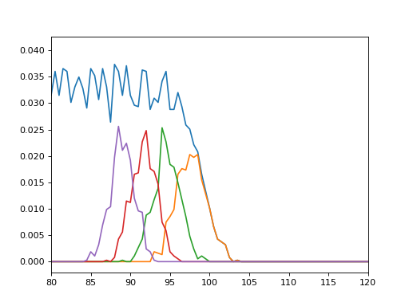

Observables¶
Radial Distribution Functions¶
-
class
pytim.observables.RDF(universe, nbins=75, max_radius='full', start=None, stop=None, step=None, observable=None, observable2=None, kargs1={}, kargs2={})¶ Calculates a radial distribution function of some observable from two groups.
The two functions must return an array (of scalars or of vectors) having the same size of the group. The scalar product between the two functions is used to weight the distriution function.
Parameters: - max_radius (double) – compute the rdf up to this distance. If ‘full’ is supplied (default) computes it up to half of the smallest box side.
- nbins (int) – number of bins
- observable (Observable) – observable for first group
- observable2 (Observable) – observable for second group
Example:
>>> import MDAnalysis as mda >>> import numpy as np >>> import pytim >>> from pytim import observables >>> from pytim.datafiles import * >>> >>> u = mda.Universe(WATER_GRO,WATER_XTC) >>> oxygens = u.select_atoms("name OW") >>> >>> nres = observables.NumberOfResidues() >>> >>> rdf = observables.RDF(u,nbins=120, observable=nres,observable2=nres) >>> >>> interface = pytim.ITIM(u,alpha=2.,group=oxygens, cluster_cut=3.5,molecular=False) >>> >>> for ts in u.trajectory[::50]: ... layer=interface.layers[0,0] ... rdf.sample(layer,layer) >>> rdf.count[0]=0 >>> np.savetxt('RDF3D.dat', np.column_stack((rdf.bins,rdf.rdf)))
Note that one needs to specify neither both groups, not both observables. If only the first group (observable) is specified, the second is assumed to be the same as the first, as in the following example:
>>> rdf1 = observables.RDF(u,observable=nres) >>> rdf2 = observables.RDF(u,observable=nres) >>> rdf3 = observables.RDF(u,observable=nres,observable2=nres) >>> >>> rdf1.sample(layer) >>> rdf2.sample(layer,layer) >>> rdf3.sample(layer,layer) >>> print np.all(rdf1.rdf[:]==rdf2.rdf[:]),np.all(rdf1.rdf[:]==rdf3.rdf[:]) True True
-
class
pytim.observables.RDF2D(universe, nbins=75, max_radius='full', start=None, stop=None, step=None, excluded_dir='auto', true2D=False, observable=None, kargs1={}, kargs2={})¶ Calculates a radial distribution function of some observable from two groups, projected on a plane.
The two functions must return an array (of scalars or of vectors) having the same size of the group. The scalar product between the two functions is used to weight the distriution function.
Parameters: - nbins (int) – number of bins
- excluded_dir (char) – project position vectors onto the plane orthogonal to ‘z’,’y’ or ‘z’
- observable (Observable) – observable for group 1
- observable2 (Observable) – observable for group 2
Example:
>>> import MDAnalysis as mda >>> import numpy as np >>> import pytim >>> from pytim import * >>> from pytim.datafiles import * >>> >>> u = mda.Universe(WATER_GRO,WATER_XTC) >>> oxygens = u.select_atoms("name OW") >>> interface = pytim.ITIM(u,alpha=2.,group=oxygens, cluster_cut=3.5,molecular=False) >>> rdf = observables.RDF2D(u,nbins=250) >>> >>> for ts in u.trajectory[::50] : ... layer=interface.layers[0,0] ... rdf.sample(layer,layer) >>> rdf.count[0]=0 >>> np.savetxt('RDF.dat', np.column_stack((rdf.bins,rdf.rdf)))
This results in the following RDF (sampling more frequently):
(Source code, png, hires.png, pdf)

{kind=link}
{kind=link}
Profiles¶
-
class
pytim.observables.Profile(direction='z', observable=None, interface=None, center_group=None)¶ Calculates the profile (normal, or intrinsic) of a given observable across the simulation box.
Parameters: - group (AtomGroup) – calculate the profile based on this group
- direction (str) – ‘x’,’y’, or ‘z’ : calculate the profile along this direction
- observable (Observable) – ‘Number’, ‘Mass’, or ‘Charge’ : calculate the profile of this quantity. If None is supplied, it defaults to the number density
- interface (ITIM) – if provided, calculate the intrinsic profile with respect to the first layers
- center_group (AtomGroup) – if interface is not provided, this optional group can be supplied to center the system
Example (non-intrinsic, total profile + first 4 layers ):
>>> import numpy as np >>> import MDAnalysis as mda >>> import pytim >>> from pytim.datafiles import * >>> from pytim.observables import Profile >>> >>> u = mda.Universe(WATER_GRO,WATER_XTC) >>> g = u.select_atoms('name OW') >>> # here we calculate the profiles of oxygens only (note molecular=False) >>> inter = pytim.ITIM(u,group=g,max_layers=4,centered=True, molecular=False) >>> >>> Layers=[] >>> # by default Profile() uses the number of atoms as an observable >>> for n in np.arange(0,5): ... Layers.append(Profile()) >>> >>> for ts in u.trajectory[::50]: ... for n in range(len(Layers)): ... if n>0: ... group = u.atoms[u.atoms.layers == n ] ... else: ... group = g ... Layers[n].sample(group) >>> >>> density=[] >>> for L in Layers: ... low,up,avg = L.get_values(binwidth=0.5) ... density.append(avg) >>> >>> np.savetxt('profile.dat',list(zip(low,up,density[0],density[1],density[2],density[3],density[4])))
This results in the following profile (zooming close to the interface border)
(Source code, png, hires.png, pdf)

Example (intrinsic, one layer):
>>> import numpy as np >>> import MDAnalysis as mda >>> import pytim >>> from pytim.datafiles import * >>> from pytim.observables import Profile
>>> u = mda.Universe(WATER_GRO,WATER_XTC) >>> g = u.select_atoms("name OW") >>> >>> inter = pytim.ITIM(u, group=g,max_layers=1,cluster_cut=3.5,centered=True, molecular=False) >>> profile = Profile(interface=inter) >>> >>> for ts in u.trajectory[::50]: ... profile.sample(inter.atoms) >>> >>> low, up, avg = profile.get_values(binwidth=0.2) >>> np.savetxt('profile.dat',list(zip(low,up,avg)))
This results in the following profile:
(Source code, png, hires.png, pdf)
{kind=link}
{kind=link}
{kind=link}
{kind=link}
Time Correlation Functions¶
-
class
pytim.observables.Correlator(universe=None, observable=None, reduced=True, normalize=True, reference=None, memory_warn=None)¶ Computes the (self) correlation of an observable (scalar or vector)
Parameters: - observable (Observable) – compute the autocorrelation of this observable
- reduced (bool) – when the observable is a vector, average over all spatial direction if reduced==True (default)
- normalize (bool) – normalize the correlation to 1 at t=0
- reference (AtomGroup) – if the group passed to the sample() function changes its composition along the trajectory (such as a layer group), a reference group that includes all atoms that could appear in the variable group must be passed, in order to provide a proper normalization. This follows the convention in J. Phys. Chem. B 2017, 121, 5582-5594, (DOI: 10.1021/acs.jpcb.7b02220). See the example below.
- memory_warn (double) – if not None, print a warning once this threshold of memory (in Mb) is passed.
Example:
>>> import pytim >>> import MDAnalysis as mda >>> import numpy as np >>> from pytim.datafiles import WATERSMALL_GRO >>> from pytim.utilities import lap >>> # tmpdir here is specified only for travis >>> import os >>> WATERSMALL_TRR = pytim.datafiles.pytim_data.fetch('WATERSMALL_LONG_TRR',tmpdir='./') checking presence of a cached copy... not found. Fetching remote file... done.
>>> u = mda.Universe(WATERSMALL_GRO,WATERSMALL_TRR) >>> g = u.select_atoms('name OW')
>>> velocity = pytim.observables.Velocity() >>> corr = pytim.observables.Correlator(observable=velocity) >>> for t in u.trajectory[1:]: ... corr.sample(g) >>> vacf = corr.correlation()
This produces the following (steps of 1 fs):
(Source code, png, hires.png, pdf)

In order to compute the correlation for variable groups, one should proceed as follows:
>>> corr = pytim.observables.Correlator(observable=velocity,reference=g) >>> # notice the molecular=False switch, in order for the >>> # layer group to be made of oxygen atoms only and match >>> # the reference group >>> inter = pytim.ITIM(u,group=g,alpha=2.0,molecular=False) >>> for t in u.trajectory[1:10]: # example only: sample the whole trajectory ... corr.sample(inter.atoms) >>> os.unlink('./'+WATERSMALL_TRR) # cleanup >>> layer_vacf = corr.correlation()
{kind=link}
{kind=link}
Misc¶
-
class
pytim.observables.LayerTriangulation(interface, layer=1, return_triangulation=True, return_statistics=True)¶ Computes the triangulation of the surface and some associated quantities. Notice that this forces the interface to be centered in the box.
Parameters: - universe (Universe) – the MDAnalysis universe
- interface (ITIM) – compute the triangulation with respect to it
- layer (int) – (default: 1) compute the triangulation with respect to this layer of the interface
- return_triangulation (bool) – (default: True) return the Delaunay triangulation used for the interpolation
- return_statistics (bool) – (default: True) return the Delaunay triangulation used for the interpolation
Returns Observable LayerTriangulation: Example:
>>> import pytim >>> import MDAnalysis as mda >>> from pytim.datafiles import WATER_GRO
>>> interface = pytim.ITIM(mda.Universe(WATER_GRO),molecular=False) >>> surface = pytim.observables.LayerTriangulation( interface,return_triangulation=False) >>> stats = surface.compute() >>> print ("Surface= {:04.0f} A^2".format(stats[0])) Surface= 6328 A^2
-
class
pytim.observables.IntrinsicDistance(interface, layer=1)¶ Initialize the intrinsic distance calculation.
Parameters: - universe (Universe) – the MDAnalysis universe
- interface (ITIM) – compute the intrinsic distance with respect to this interface
- layer (int) – (default: 1) compute the intrinsic distance with respect to this layer of the interface
Example: TODO
-
compute(inp)¶ Compute the intrinsic distance of a set of points from the first layers.
Parameters: positions (ndarray) – compute the intrinsic distance for this set of points
Basic Observables¶
-
class
pytim.observables.Number(*arg, **kwarg)¶ The number of atoms.
-
compute(inp)¶ Compute the observable.
Parameters: inp (AtomGroup) – the input atom group Returns: one, for each atom in the group
-
-
class
pytim.observables.NumberOfResidues(*arg, **karg)¶ The number of residues.
Instead of associating 1 to the center of mass of the residue, we associate 1/(number of atoms in residue) to each atom. In an homogeneous system, these two definitions are (on average) equivalent. If the system is not homogeneous, this is not true anymore.
-
compute(inp)¶ Compute the observable.
Parameters: inp (AtomGroup) – the input atom group Returns: one, for each residue in the group
-
-
class
pytim.observables.Position(*arg, **kwarg)¶ Atomic positions
-
compute(inp)¶ Compute the observable.
Parameters: inp (AtomGroup) – the input atom group Returns: atomic positions
-
-
class
pytim.observables.Velocity(*arg, **kwarg)¶ Atomic velocities
-
compute(inp)¶ Compute the observable.
Parameters: inp (AtomGroup) – the input atom group Returns: atomic velocities
-
-
class
pytim.observables.Force(*arg, **kwarg)¶ Atomic forces
-
compute(inp)¶ Compute the observable.
Parameters: inp (AtomGroup) – the input atom group Returns: atomic forces
-
-
class
pytim.observables.Orientation(universe, options='')¶ Orientation of a group of points.
Parameters: options (str) – optional string. If normal is passed, the orientation of the normal vectors is computed If the option ‘molecular’ is passed at initialization, coordinates of the second and third atoms are folded around those of the first. -
compute(inp)¶ Compute the observable.
Parameters: inp (ndarray) – the input atom group. The length be a multiple of three Returns: the orientation vectors For each triplet of positions A1,A2,A3, computes the unit vector beteeen A2-A1 and A3-A1 or, if the option ‘normal’ is passed at initialization, the unit vector normal to the plane spanned by the three vectors.
-